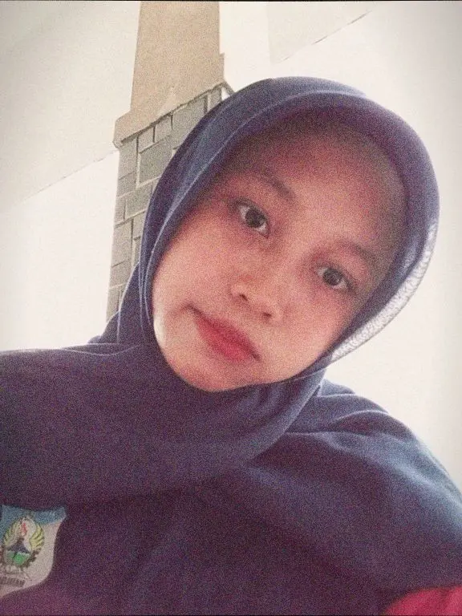

Student | Teknik Jaringan Komputer dan Telekomunikasi
Nama Lengkap: Diska Ayu Fitri
Tempat, Tanggal Lahir: (Cirebon,10 September 2010)
Jenis Kelamin: Perempuan
Alamat: (Jalan Gempol, Blok Utara RT/RW 01/02 Desa Gempol)
Sekolah: SMK Negeri 1 Leuwimunding
Kelas: XI TJKT 1
Jurusan: Teknik Jaringan Komputer dan Telekomunikasi
Hobi: (nonton)
Cita-cita: (jadi anak teknik ITB)
Kunjungi repository praktikum saya melalui tombol di bawah ini.
Repository Praktikum